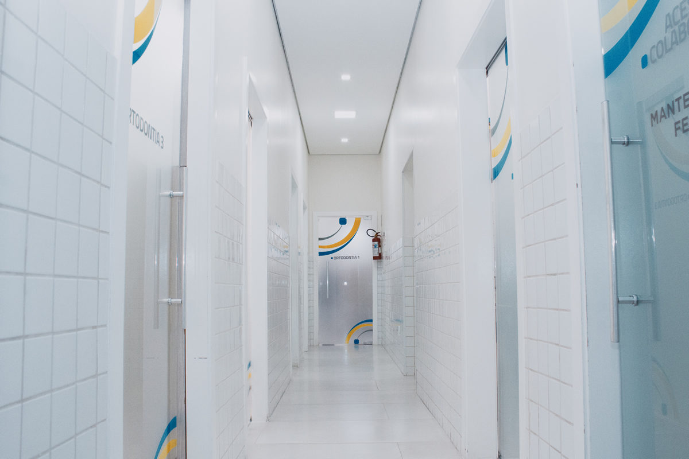
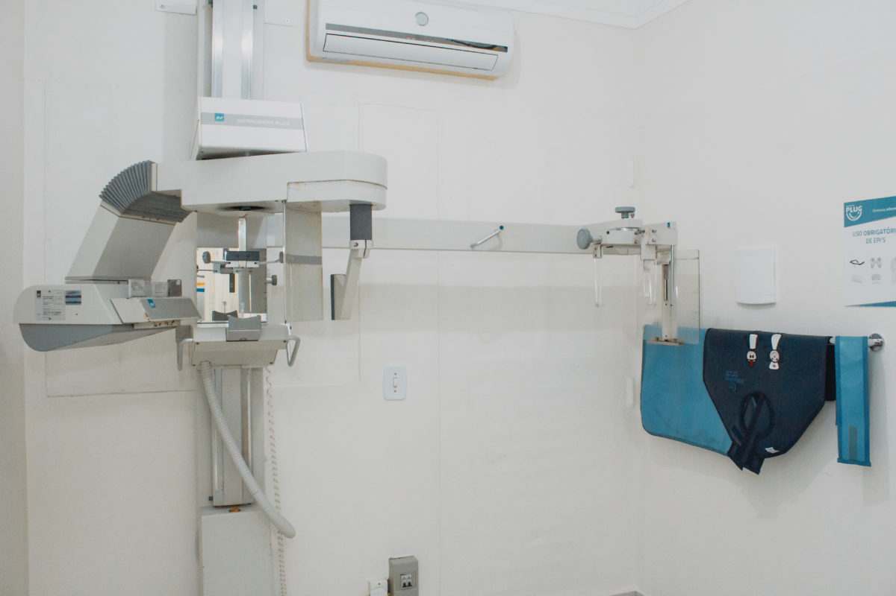
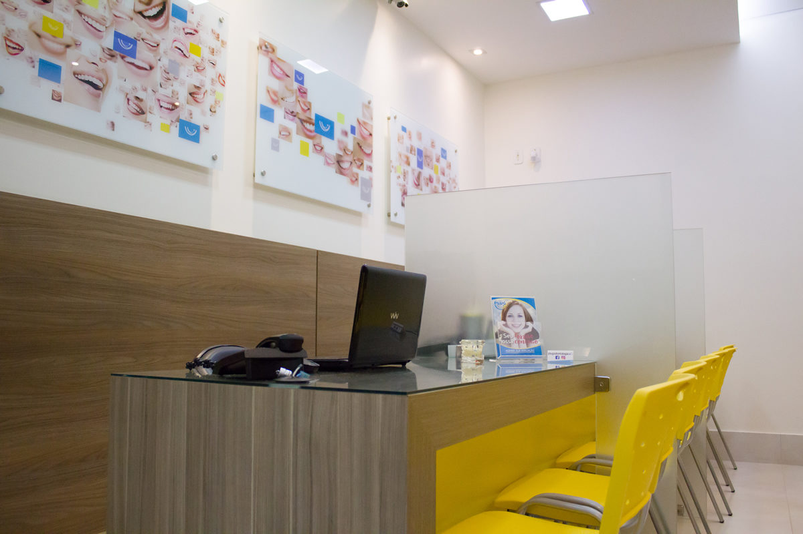
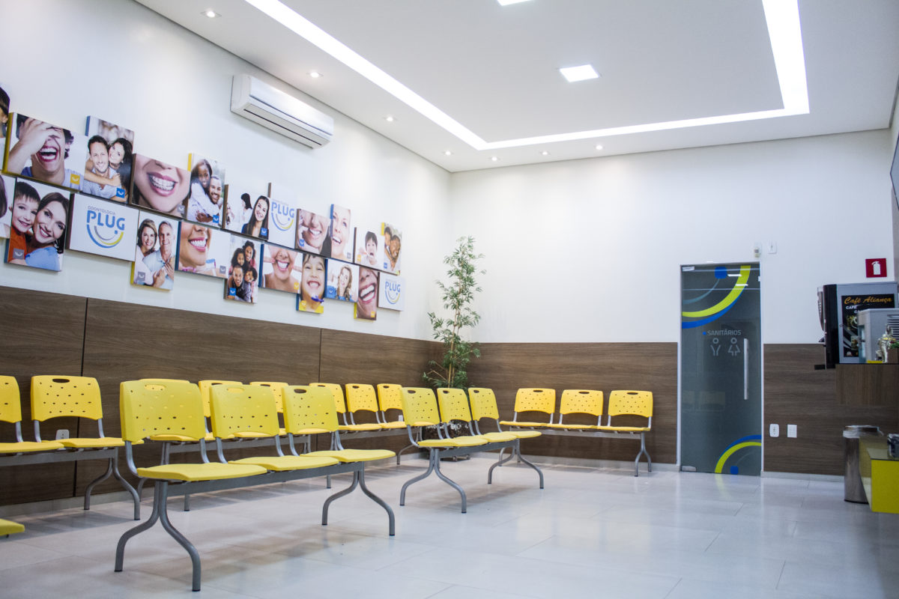
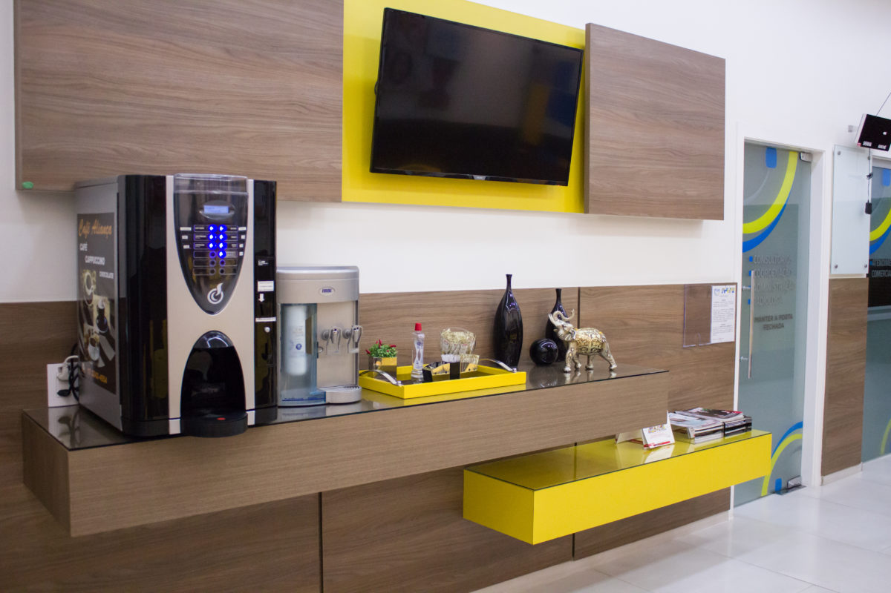

01 / ESCUTAR
Primeiro, compreender.
Uma conversa para conhecer dúvidas, prioridades e expectativas antes de pensar nos próximos passos.
Nossa essência · Votuporanga · Desde 2010
De origem familiar e administrada por dentistas, a Clinimed reúne diferentes especialidades em um espaço pensado para acolher cada pessoa com atenção e proximidade.



01 / Nossa história
A trajetória da Clinimed começou em 2010, em Votuporanga, a partir de uma proposta de cuidado odontológico com raízes familiares. Essa origem segue presente na maneira como a clínica busca receber, compreender e orientar seus pacientes.
Com uma atuação multidisciplinar, diferentes áreas da odontologia podem contribuir para um olhar mais completo sobre a saúde bucal — da prevenção à reabilitação, sempre com planejamento individual.
Cada pessoa chega com uma história. O cuidado começa por entendê-la.
02 / Nosso jeito de cuidar
O atendimento envolve mais do que procedimentos: começa com informação clara e respeito às necessidades de cada pessoa.
Uma conversa para conhecer dúvidas, prioridades e expectativas antes de pensar nos próximos passos.
Diferentes especialidades podem se complementar na construção de um planejamento individualizado.
Orientações claras e atenção ao percurso do paciente ajudam a tornar cada etapa mais tranquila.
03 / Por trás do cuidado
A Clinimed reúne diferentes especialidades odontológicas. Esse trabalho conjunto permite considerar necessidades funcionais, preventivas e estéticas sem perder de vista o que é importante para cada paciente.
Conheça as áreas de atuação e saiba mais sobre quem pode acompanhar sua jornada de cuidado.
Conheça nossos profissionais

Ambientes reais da Clinimed, pensados para receber e cuidar.
04 / Nossos espaços
Conheça alguns dos espaços que fazem parte da experiência de atendimento na Clinimed.



O próximo passo
Estamos em Votuporanga e teremos prazer em receber você para uma avaliação e uma conversa sobre suas necessidades.